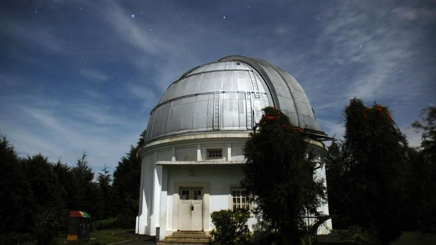

Sejarah
Kota Bandung berasal dari kata bendung atau bendungan karena terbentuknya sungai Citarum oleh lava Gunung Tangkuban Parahu yang lalu membentuk telaga. Legenda yang diceritakan oleh orang-orang tua di Bandung mengatakan bahwa nama Bandung diambil dari sebuha kendaraan air yang terdiri dari dua perahu yang diikat berdampingan yang disebut bandung yang digunakan oleh Bupati Bandung, R.A Winaraakusumah II, untuk melayari Ci Tarum dalam mencari tempat kedudukan kabupaten yang baru untuk menggantikan ibu kota yang lama di Dayeuhkolot.
Berdasarkan filosofi Sunda, kata Bandung juga berasal dari kalimat Nga-Bandung-an Banda Indung, yang meurpakan kalimat sakral dan luhur karena mengandung nilai ajaran Sunda. Nga-Bandung-an artinya menyaksikan atau bersaksi. Banda adalah segala sesuati yang berada di alam hidup yaitu bumi dan atmosfer, baik itu mahluk hidup maupun benda mati. Sinonim dari banda adalah harta. Indung berarti Ibu atau bumi, disebut juga sebaga Ibu Pertiwi tempat Banda berada.
Geografis

Kota Bandung dikelilingi oleh pegunungan, sehingga bentuk morfologi wilayahnya bagaikan sebuah mangkok raksasa, secara geografis kota ini terletak di tengah-tengah Provinsi Jawa Barat, serta berada pada ketinggian +-768 m di atas permukaan laut, dengan titik tertinggi berada di sebelah utara dengan ketinggian 1.050 meter di atas permukaan laut dan sebelah selatan merupakan kawasan rendah dengan ketinggian 675 meter di atas permukaan laut.
Wisata
Sejak dibukanya Jalan Tol Cipularang, kota Bandung telah menjadi tujuan utama dalam menikmati liburan akhir pekan terutama dari masyarakat yang berasal dari Jakarta sekitarnya. Selain menjadi kota wisara belanja, kota Bandung juga dikenal dengan sejumlah besar bangunan lama berarsitektur peninggalan Belanda.
Farm House Lembang
Lokasi
Berada di jalur utama Bandung-Lembang, Farm House menjadi objek wisata yang tidak pernah sepi pengunjung. Selain karena letaknya strategis, kawasan ini juga menghadirkan nuansa wisata khas Eropa. Semua itu diterapkan dalam bentuk spot swafoto Instagramable.
Kondisi
Selain karena letaknya tsrategis, kawasan ini jug amneghadirkan nuansa wisata khas Eropa. Semua itu diterapkan dalam bentuk spot swafoto Instagramable
Observatorium Bosscha

Memiliki beberapa teleskop, antara lain, Refaktor Ganda Zeiss, Schmidt Bimasakti, Refaktor Bamberg, Caaegrain GOTO, dan Teleskop Surya. Refaktor Ganda Zeiss adalah jenis teleskop terbesar untuk meneropong bintang. Benda ini diletakan pada atap kubah sehingga saat teropong digunakan, atap tersebut harus dibuka. Observatorium Bosscha boleh dikunjungi oleh siapapun, tanpa tiket. Namun, bai yang ingin menggunakan Teleskop Zeiss, wajib mrndaftarkan diri. Untuk instansi atau lembaga pendidikan, diberikan jadwal hari Selasa sampai Jumat. Sementara itu, kunjungan individu dibuka setiap hari Sabtu.